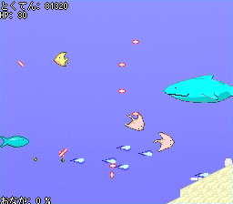
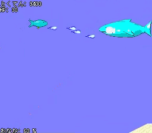
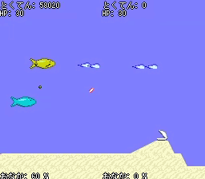

# 「ぎょっ」について

「ぎょっ」は魚が主人公の
横スクロールシューティングゲームです。
ステージは1つだけ。
# 起動方法
gyo.zip を展開後、gyo.batを実行してください。
# 動作に必要な環境
* Java ランタイムのバージョン 1.3 以上
# 操作方法
## 仮想パッドとキーボードの対応
| 仮想パッド | プレイヤー1 | プレイヤー2 |
| ------------ | ----------- | ----------- |
| 方向キー | WASD | ↑←↓→ |
| Aボタン | V | ／ |
| Bボタン | B | ＼ |
| Optionボタン | ESC | Enter |
## キーと効果の対応
| キー | 効果 |
| ------------ | ------------------ |
| Aボタン | 射撃, 決定 |
| Bボタン | 食らいつき |
| Optionボタン | ポーズメニュー |
# システム紹介
## 食らいつき(Bボタン)
敵に命中すると、倒すまで離さない！
( ひっぱり合いになるので、危ないときはBボタンで離れよう。 )

## うんこを射出
食らいつきでおなかを満たすとうんこを射出！
うんこはプレイヤーを追尾して射撃を手伝ってくれるぞ！
## うんこを拝借
2人同時プレイ時、仲間のうんこに触れると自分のものに出来る！
なかよく、うんこを分け合おう！
